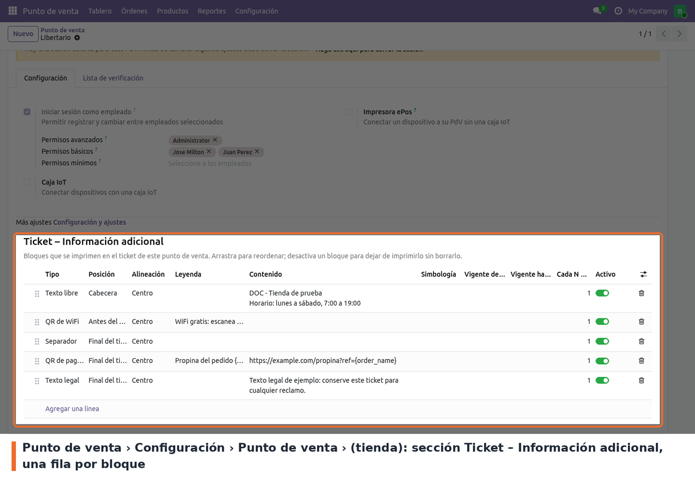
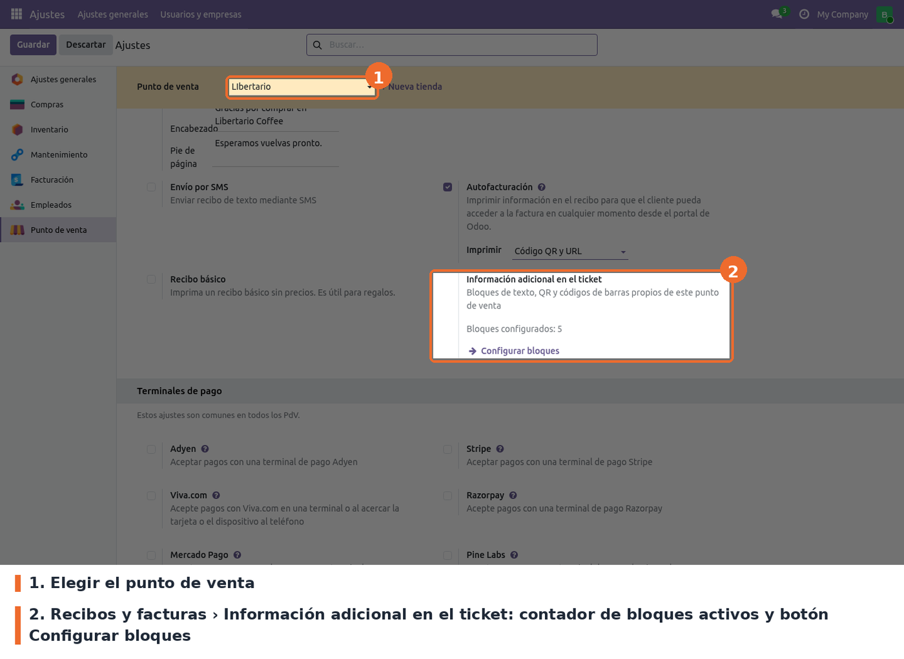
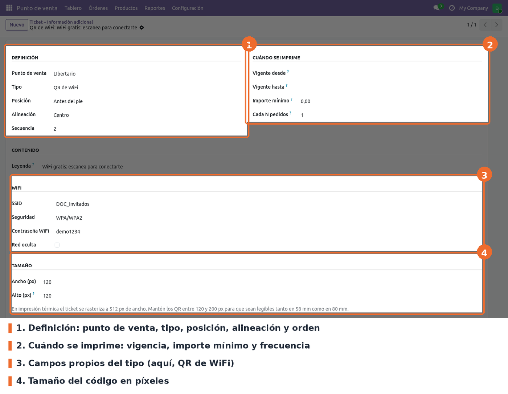
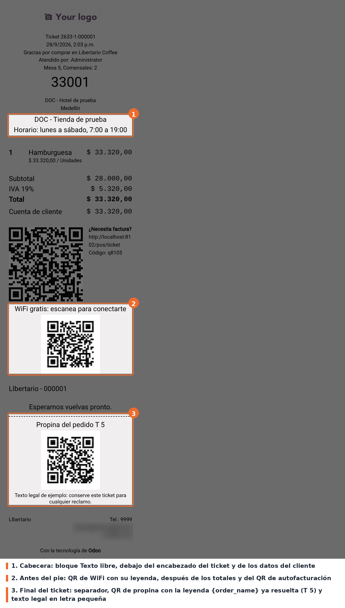

Agrega al ticket del Punto de Venta bloques de información adicional configurables por tienda: texto, texto legal, separadores, imágenes, códigos QR y códigos de barras. Cada punto de venta tiene su propia lista de bloques, ordenable y con activación individual, y cada bloque se imprime en una de tres posiciones del ticket: cabecera, antes del pie o final del ticket.
Tipos de bloque disponibles: texto libre, texto legal (letra más pequeña), separador, imagen, QR de URL, QR de texto, código de barras, QR de reseña en Google, QR de WhatsApp, QR de WiFi, QR de contacto (vCard) y QR de pago o propina.
Cada bloque puede limitarse por vigencia (fechas desde/hasta), importe mínimo del pedido y
frecuencia (uno de cada N pedidos). El contenido admite marcadores que se reemplazan al imprimir
con datos del pedido, como {order_name}, {total} o {cashier}.
Los QR y códigos de barras los genera el propio Odoo con el endpoint /report/barcode; no se usa
ninguna librería JavaScript externa. Las imágenes se incrustan en el ticket, así que se siguen
imprimiendo aunque la caja pierda la conexión, y si un código no se puede generar se imprime la
misma información en texto.
point_of_sale. No hay dependencias externas ni librerías de Python adicionales.Instalar el módulo desde Aplicaciones. Crea el modelo pos.receipt.custom.block, sus permisos y
una regla multicompañía. Después de instalar o actualizar, hay que volver a entrar al POS desde
el backend (o recargar la pestaña) para que cargue los archivos nuevos y los bloques.
point_of_sale.group_pos_manager) y Ajustes (base.group_system):
lectura y escritura de bloques.point_of_sale.group_pos_user): solo lectura, que es lo que necesita la
caja para cargar los bloques al abrir la sesión.El módulo conserva el nombre técnico, el modelo y los nombres de campo de la versión 17, así que
los bloques ya configurados se mantienen sin script de datos. Lo que cambió es el código del POS:
la carga de datos pasó al contrato pos.load.mixin de Odoo 19 y el ticket se arma a partir del
pedido vivo en lugar de export_for_printing().
Los bloques se configuran por punto de venta. El acceso principal está en Punto de venta › Configuración › Punto de venta: al abrir una tienda, al final del formulario aparece la sección Ticket – Información adicional, con una lista editable en línea. Cada fila es un bloque; se reordenan arrastrando el ícono de la izquierda y se apagan con el interruptor Activo.

Punto de venta › Configuración › Punto de venta › (tienda): sección Ticket – Información adicional
Hay dos accesos más al mismo modelo:

Ajustes › Punto de venta › Recibos y facturas: opción Información adicional en el ticket
Todas las opciones requieren el grupo Administrador del POS. Si no hay ningún bloque, el ticket se imprime igual que el estándar de Odoo.
Al abrir un bloque desde la lista global o desde Configurar bloques se ve el formulario completo. Los grupos de campos cambian según el tipo elegido.

Formulario de un bloque de tipo QR de WiFi
Para el QR de reseña, el Contenido puede ser el Place ID de Google o una URL completa: si empieza
por http se usa tal cual; si no, se arma el enlace de reseña de Google con ese Place ID.
Disponibles en Contenido, Leyenda y Mensaje de WhatsApp: {order_name}, {total}, {date},
{cashier}, {table}, {partner_name}, {tracking_number} y {store_name}. Un marcador que no
existe se imprime tal cual, para que el error se vea en el ticket.
A tener en cuenta:
No hay ningún paso nuevo para el cajero. Al terminar un pedido, el ticket incluye los bloques activos de la tienda que cumplen sus condiciones (vigencia, importe mínimo y frecuencia), cada uno en su posición:
Los mismos bloques salen en la pantalla de recibo, en la impresión, en la reimpresión desde Órdenes › Imprimir recibo y en el recibo enviado por correo.

Ticket reimpreso con bloques en las tres posiciones
La captura es la vista de impresión de un ticket reimpreso desde Órdenes, con cinco bloques de
ejemplo: un texto libre en la cabecera, un QR de WiFi antes del pie y, al final, un separador, un
QR de propina cuya leyenda usa {order_name} y un texto legal.
pos_restaurant, {order_name} se reemplaza por el nombre que Odoo le da
al pedido en la mesa (por ejemplo "T 5"), no por la referencia del pedido. Para imprimir una
referencia única conviene usar {tracking_number}.{algo} literal en el ticket. El marcador está mal escrito; ver la lista en
Configuración.{order_name} en restaurante. Toma el valor de getName() del pedido, que en
pos_restaurant devuelve el nombre de la mesa ("T 5") o el texto de venta directa, no la referencia. En la
captura de uso se ve así.div.before-footer, que en la
plantilla de Odoo 19 está dentro de t-if="!props.basic_receipt"; en un recibo básico no salen.custom_receipt_block_ids lleva
context="{'active_test': False}", pero la lista embebida solo muestra los activos. Se ven y se
reactivan desde el menú global o desde Configurar bloques.sequence_number).i18n/.static/description/icon.png: en Aplicaciones se ve el ícono genérico de Odoo.models/pos_receipt_custom_block.py: el modelo pos.receipt.custom.block (hereda
pos.load.mixin), sus validaciones y la lista de campos que se envían al POS
(POS_LOADED_FIELDS).models/pos_session.py: agrega el modelo en _load_pos_data_models(). El dominio de carga solo
trae los bloques activos de la tienda de la sesión.models/pos_config.py: el One2many custom_receipt_block_ids y la acción que abre los bloques de
una tienda.models/res_config_settings.py: el contador y el botón de Ajustes.views/: la sección en el formulario de pos.config, la opción en Ajustes › Recibos y
facturas, las listas, el formulario, la búsqueda y el menú global.security/: permisos por grupo y regla multicompañía sobre el company_id heredado de la tienda.static/src/utils/receipt_block_utils.js: URLs de /report/barcode, payloads de WiFi, vCard,
WhatsApp y reseña, marcadores y texto de respaldo.static/src/app/services/pos_store.js: parche de PosStore; carga los bloques, filtra por
vigencia, importe y frecuencia, resuelve marcadores e incrusta las imágenes como data: URI.static/src/app/services/printer_service.js: parche de PrinterService.print() que incrusta los
códigos antes de rasterizar.static/src/app/screens/receipt_screen/receipt_screen.js: parche de _sendReceiptToCustomer()
para el envío por correo.static/src/app/screens/receipt_screen/receipt/order_receipt.js, .xml y .scss: setup() y el
getter customReceiptBlocks de OrderReceipt, la herencia de la plantilla
point_of_sale.OrderReceipt y los estilos (clases o_ptc_*).//ReceiptHeader (after),
//div[hasclass('before-footer')] (before) y //div[hasclass('after-footer')] (inside). Los tres
existen en point_of_sale.OrderReceipt de Odoo 19. La herencia se resuelve en el navegador: si una
versión futura quita alguno, la instalación no avisa y el error aparece al abrir el POS.OrderReceipt no tiene setup() en Odoo 19. El parche define uno para tener this.pos con
usePos(). Si el core agrega su propio setup(), el parche debe llamar a super.setup().htmlToCanvas cachea cada recurso por URL
sin la query string (getCacheKey en point_of_sale/static/src/app/utils/html-to-image.js).
Todos los códigos son /report/barcode/?..., así que sin incrustarlos el primer código se
repetiría en todos los bloques. Con data: URI esa caché no interviene. En la reimpresión de la
captura, los dos QR del ticket llegaron como data:image/png;base64.Standard39, I2of5), no
Code39 ni ITF: con un nombre inválido ir.actions.report.barcode() lanza KeyError, el
endpoint responde 500 y el ticket sale con la imagen rota.ir.actions.report.barcode() rechaza imágenes de más de 1 200 000
px²; el endpoint lo devuelve como HTTP 200 con HTML y el <img> sale roto sin error en el log. La
validación del modelo lo evita./report/barcode. Se usa ?barcode_type=..&value=.. en lugar de la forma de
ruta, porque los payloads de WiFi, vCard y URLs llevan / y saltos de línea.tests/test_receipt_custom_block.py (22 tests: validaciones, carga al POS, campo
imagen, integración con pos.config y el contrato con barcode() del core) y
static/tests/receipt_block_utils_tests.js (QUnit, funciones de receipt_block_utils.js). Los
parches del POS no tienen test automático: se validan en el navegador.